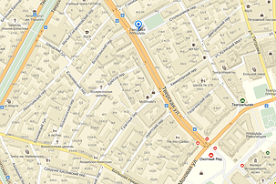

2014 ЗИМНИЕ КАНИКУЛЫ 2015
В МОСКВЕРОЖДЕСТВЕНСКИЕ ЯРМАРКИ
Во время праздничного представления профессиональные актеры знакомят гостей с культурой и традициями дворянских балов, старинными развлечениями и народными играми. В этот раз юным гостям предложат окунуться в мир старинных восточных легенд и сказок.
Путешествие в Рождество начнется в Домике Деда Мороза
и Снегурочки у Воскресенских ворот.
Здесь все желающие смогут получить
Волшебный паспорт путешественника
с указанием всех ярмарок, написать письмо Деду Морозу и купить необычные товары из Великого Устюга и Костромы.
На Никольской улице, москвичей и гостей столицы ждет первая сказка — «12 месяцев». Каждому месяцу года посвящен отдельный торговый домик. Вокруг волшебного костра, который никогда не гаснет, водят хороводы, поют песни и разгадывают тематические загадки.
На каждой площадке проводятся необычные мастер-классы. Гости фестиваля смогут создать свой уникальный сувенир: в переходе от Никольской улицы к площади Революции развернется «Город мастеров»: вместе с профессиональными кузнецами можно выковать подкову на счастье и испечь специальный «блинчик от кузнеца».
На Театральной площади ярмарка «Город ангелов». В белоснежных шатрах продаются сувенирные ангелочки из ткани, дерева и стекла.
В Новопушкинском сквере разворачивается одна из самых ярких ярмарок — «Снежная королева». В Москву волшебницу привез олень, который живет на ярмарке до конца рождественских каникул. Кай, Герда и говорящие вороны катают гостей с горок и проводят ледяные мастер-классы.
Улица Кузнецкий Мост превратитилась в самую известную сказку Александра Пушкина — «Лукоморье». Автор бессмертного произведения в цилиндре и плаще встречает гостей и рассказывает посетителям про заколдованный ледяной дуб с русалкой и ученым котом. В уютных шале со сказочным декором можно купить книжки, игрушки, пряники и сладости.
Посмеяться вдоволь над своим отражением гости фестиваля могут на ярмарке «Зеркальное царство». В кривых зеркалах можно сфотографироваться, а на уроках и лекциях мастера стекольного дела научат создавать витражи и удивительные узоры по зеркалу. Все покупки можно упаковать в специальную зеркальную бумагу. На этом путешествие не закончивается: вся улица Большая Дмитровка превратилась в сказочный зеркальный лес, даже небо здесь волшебное. Зеркальное путешествие приведет к главной героине сказки — Алисе. Здесь можно купить дизайнерские шляпы или примерить кроличьи ушки.
На ярмарке «Город гномов» работают творческие мастерские, сказочные гномы устраивают театральные представления. Маленькие волшебники открыли для всех желающих свои фермы и магазины.
"ПУТЕШЕСТВЕИЕ В РОЖДЕСТВО"

А так же:
-
По щучьему веленью
Климентовский переулок -
Рождество
у храма Христа Спасителя -
Катание на верблюде с Аладдином
Арбат (у Праги) -
Город Ангелов
Театральная площадь -
Сказка о царе Салтане

Тверская площадь -
Пиноккио
Кузнецкий Мост (у ЦУМа) -
Зеркальное царство
Б.Дмитровка и Театральный проезд -
Щелкунчик
Пушкинская площадь -
Морозко
конец Тверского бульвара -
Зазеркалье (пешеходный маршрут)
Большая Дмитровка -
12 месяцев
Никольская улица

{kind=link}
{kind=link}
{kind=link}
{kind=link}
{kind=link}
{kind=link}
{kind=link}
{kind=link}
{kind=link}
{kind=link}
{kind=link}
{kind=link}
{kind=link}
{kind=link}
{kind=link}
{kind=link}
{kind=link}
{kind=link}
{kind=link}
{kind=link}
{kind=link}
{kind=link}
{kind=link}
{kind=link}
{kind=link}
{kind=link}
{kind=link}